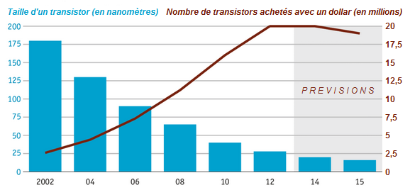
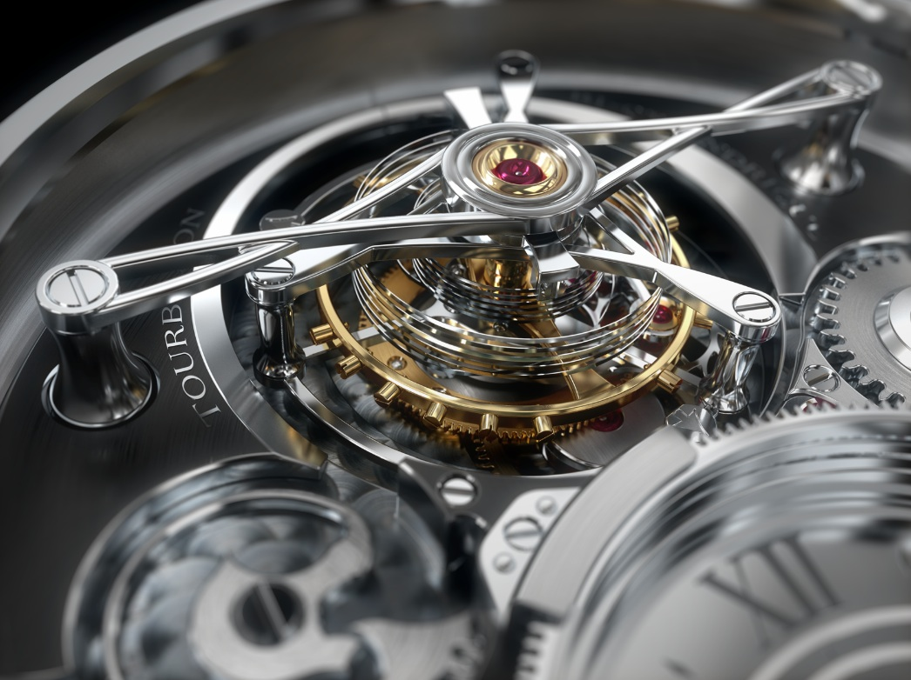
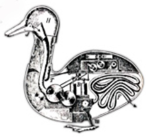
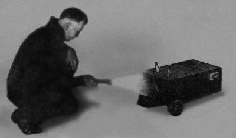
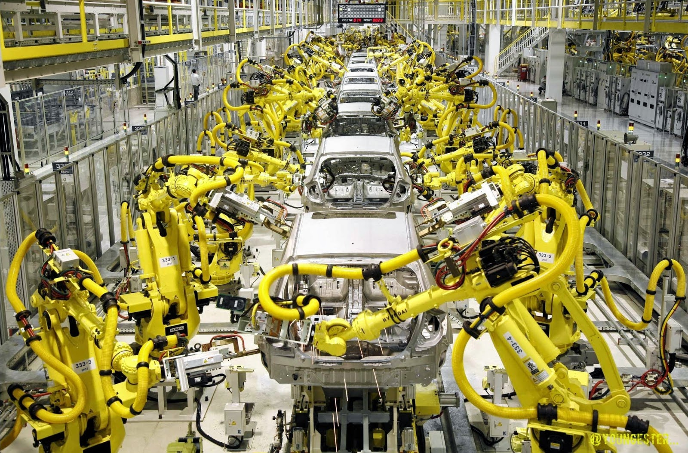
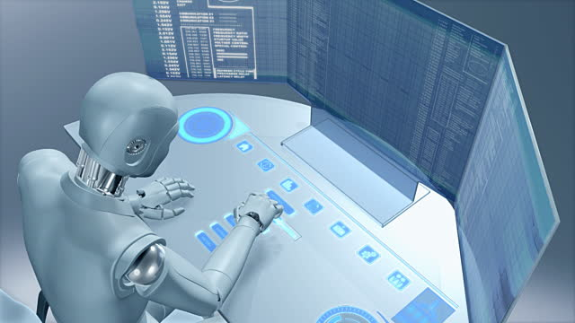
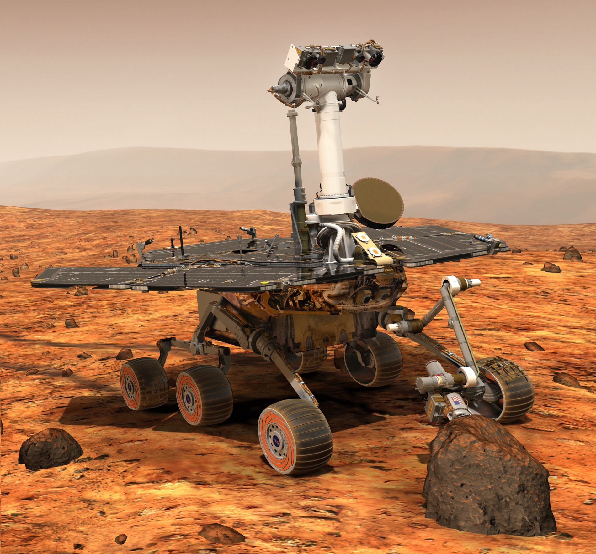

La robotique, une science nouvelle, apparue au début du XXeme siècle dont le développement n'a vraiment pu débuter que depuis quelques années grâce aux progrès réalisés dans le domaine de l'informatique et de l'intelligence artificielle.
C'est en 1920 que le mot « robot » (dérivé de « robota » signifiant « esclave/asservi ») apparaît pour la 1ère fois dans une pièce
de théâtre. Le mot Robot s'est ensuite popularisé grâce aux écrits de science fiction et principalement grâce à l'auteur Isaac Asimov,
père fondateur des 3 fameuses lois de la robotique.
1-un robot ne peut porter atteinte à un être humain, ni, en restant passif, permettre qu'un être humain soit exposé au danger ;
2-un robot doit obéir aux ordres qui lui sont donnés par un être humain, sauf si de tels ordres entrent en conflit avec la première loi ;
3-un robot doit protéger son existence tant que cette protection n'entre pas en conflit avec la première ou la deuxième loi.
Un robot est, selon la définition du centre national de ressources textuelles et lexicales (ou CNRT), « Un appareil effectuant, grâce à un système de commande automatique à base de micro-processeurs, une tâche précise pour laquelle il a été conçu dans le domaine industriel, scientifique ou domestique. » Un robot est donc un dispositif alliant : Informatique, électronique et mécanique (à ne pas confondre avec les automates, dispositifs uniquement mécaniques), c'est donc sans surprise que l'on remarque que : plus des progrès sont réalisés dans ces domaines, plus les robots développés sont évolués et sophistiqués, passants de simple machines uniquement capables de se diriger vers la lumière à de réels machines capables d’exécuter des tâches complexes que l'homme n'est pas apte à réaliser seul. Mais c'est avant tout grâce aux progrès réalisées au niveau de l'informatique que les robots connaissent un développement exponentiel. La loi de Moore, théorie datant de 1965 énonçant une multiplication par 2 de la puissance des processeurs informatique tout les 18 mois, s'est jusque là révélé juste.
Les robots demandant une puissance de calcule de plus en plus importante, il est donc normal que les progrès réalisés dans ce domaine coïncident avec ceux réalisés dans celui de la robotique.
L’ancêtre des robots, les automates sont apparus au alentours de 1600 av JC, cela restait des conceptions simples le plus souvent utilisé en horlogerie.
Mais qui ne connais pas d'autres avancés que certaines curiosités, comme le canard digérateur de Jacques de Vaucanson.
Jusque là, les automates se contentaient de répéter une tâche préprogrammée sans jamais s 'en défaire peu importe la situation. C'est au début du XXème siècle que les premiers robots capables de s'adapter à leur environnement et donc de « réfléchir » avec entre autres ; le chien de Hammond et Miessener.
Celui-ci est capable de se diriger vers une source lumineuse. La tortue de W. Grey Walter est quand à elle équipée de plusieurs capteurs permettant à ce robot de se déplacer dans un espace inconnu.
C'est en industrie que les robots commencent à être réellement utilisés et à remplacer des humains dans leurs taches quotidiennes.
Mais comme dit précédemment, c'est grâce aux progrès dans le domaine de l'informatique que les robots vont commencer à se développer et à trouver un rôle dans la société. Les robots étant capables d’exécuter des tâches complexes on commence à parler d' « intelligence artificielle ». Les grands esprits scientifiques vont commencer à se poser des questions sur les robots et leurs rôles futurs, on peut par exemple parler du test de Turing, du scientifique de génie et créateur d'une machine connue aujourd'hui sous le nom d' « ordinateur ». Ce test consiste à démarrer un dialogue entre un humain avec une machine et un autre humain à l’aveugle. Si l’homme qui engage les conversations n’est pas capable de dire lequel de ses interlocuteurs est un ordinateur, on peut considérer que le programme de l’ordinateur a passé avec succès le test. jusqu'à ce jour aucune intelligence artificelle n'a réussi ce test.
Les robots commencent alors à avoir une réel utilité, accomplissant des exploits que l'homme ne peut pas encore réaliser, principalement dû à la guerre froide, dans l’espionnage et surtout dans l'exploration et la conquete spatiale. Des robots tels que « spirit » et « opportunity »
Ces 2 robots ont été envoyés sur le sol martien car moins coûteux et plus faciles à transporter que les hommes dans l'espace. Peu à peu, les robots ont pris une place importante dans notre vie, on les retrouves partout, et leurs domaines d'applications ne cessent de s'élargir. Les robots nous rendent la vie plus facile ou plus agréable, nous permettent d'explorer des lieux ou l'humain n'a pas la capacité de se rendre, de nous aider dans le domaine médical, d'accompagner les personnes en difficulté et même de nous remplacer dans les tâches que nous ne voulons plus accomplir.
Mais les robots ne nous permettraient-ils pas de sauver des vies à notre place, d'aider les secours en cas de catastrophe, de braver les dangers et d'optimiser les chances de survies d’éventuels survivants ?